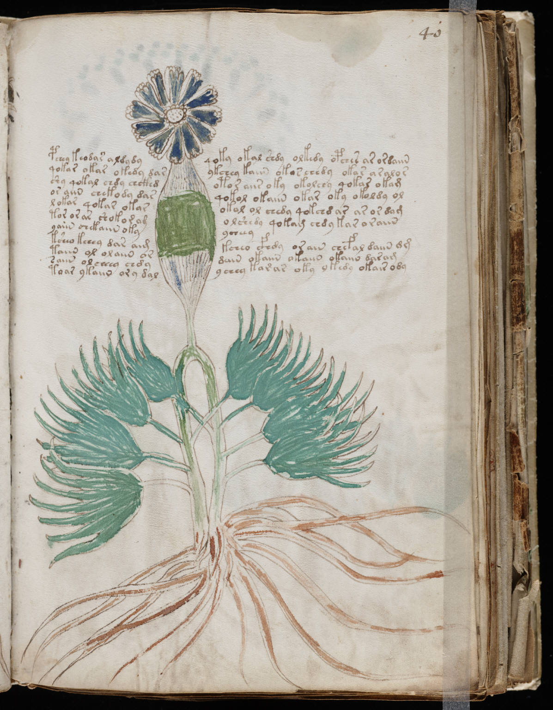

f40r
1pchey keodar aldydyqoky okal shdy olkedy opches ar ordaiin2qokar okar okedy darykchey kaiin okos chedy okar aralos3shy qokal chdy chckhdotor aiis oky okolchy qokar okam4or aiin chekody dasqokol okaiin okar oky okoldy ol5lokar qokar okarokol ol chedy qokchd ar ar or dam6tor or ar shokor omolshedy qokam chdy kar oraiin7yaiin chekaiin okyycheey8ksheo keeey dar aimkcheo cfhdy orain chefal daiin dm9taiin ol olaiin ordain okaiin okaiin okaiin daram10saiin olcheey chdyychey karar oky ykedy okair ody11toar ykaiin ory dal
